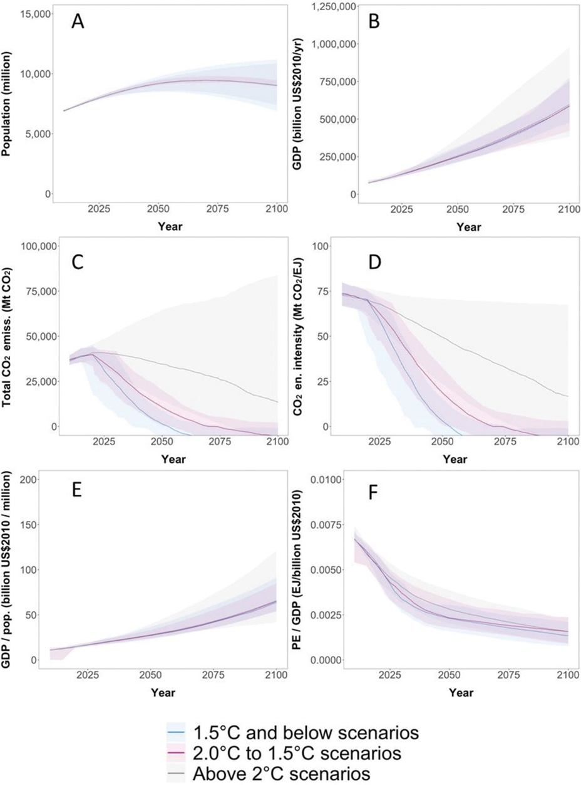

A new paper outlines the challenges and potential impacts of various energy sources, including bioenergy, hydrogen, renewable resources like solar and wind, and nuclear power.
“Global Energy System Transitions” published in the journal Review of Environmental Economics and Policy contains an extensive review of the current state and future pathways of the global energy system in the context of climate change. It discusses the links between the energy system and climate change, emphasizing the role of energy production, processing, transport, and use in greenhouse gas emissions. The document delves into strategies for reducing CO2 emissions, including technological shifts away from fossil fuels and towards renewable energy sources, carbon capture and storage (CCS), and carbon dioxide removal (CDR) technologies.

The paper outlines the challenges and potential impacts of various energy sources, including bioenergy, hydrogen, renewable resources like solar and wind, and nuclear power. The focus is also on the implications of different energy consumption patterns across sectors like transport, industry, and buildings, and the role of international policies, particularly the Paris Agreement, in shaping these patterns.
The paper also explores integrated assessment models (IAMs) used in long-term emissions scenarios and discusses critical factors like policy environment, global drivers such as population and GDP growth, and technological advancements. The document emphasizes the need for comprehensive and multidisciplinary approaches to understand and manage the energy transition, covering topics like sustainability, equity, finance, jobs, and the role of institutions.
It emphasizes the complexity and interdisciplinary nature of global energy system transitions, highlighting that understanding and managing these transitions goes beyond traditional academic boundaries. It suggests that modeling and analysis should be tailored to the specific needs of different audiences, such as policy makers, corporate planners, and central bankers. The text also underscores the importance of collaborations across disciplines, particularly between energy system modelers and social scientists, to better comprehend the societal and institutional contexts of these transitions. Additionally, it advocates for multidisciplinary education to prepare future scientists, stressing the need for effective communication among various disciplines.
“The nations around the world have agreed to transition away from fossil fuel-based energy system,” said KAIST visiting professor Haewon McJeon, who coauthored the study. “Integrated Assessment Modeling scenarios have been crucial at formulating the global transition pathways. This paper provides an extensive review of those pathways.”
Paper link: https://www.journals.uchicago.edu/doi/10.1086/728206
한국어 요약
글로벌 에너지 시스템 전환
탄소중립을 위한 글로벌 에너지 시스템 전환이 시작된 가운데 카이스트 녹색성장지속가능대학원 전해원 방문교수를 포함한 국제 연구진은 지구온난화를 1.5도 이하로 낮추기 위한 에너지 전환에 대한 리뷰를 “Review of Environmental Economics and Policy” 저널에 출간하였다.
“Global Energy System Transitions” 논문은 장기적 관점에서 에너지 시스템 전환의 프로세스를 이해하고 관리하기 위한 학문의 범경계적 관점의 필요성을 강조하고 있다. 에너지 시스템과 기후 변화 간의 연관성을 포함하여 에너지 생산, 가공, 운송, 사용에 이르기까지 각 영역에서의 기술 전환의 필요성과 이에 따른 온실가스 배출 감소 전략을 심층적으로 다루는 논문이다.
각 에너지원에 대한 장단점과 그 영향을 다루며, 교통, 산업, 건물과 같은 다양한 분야에서의 에너지 사용 패턴과 파리 협정과 같은 국제 정책의 역할을 강조한다. 또한 장기적인 배출 시나리오를 예측하는 통합 평가 모델과 같은 도구와 정책 환경, 인구 증가, 경제 성장과 같은 다각적인 영향을 논의하고 있다. 에너지 및 환경을 포함한 사회적 시스템이 다양하고 복잡하게 변화하는 만큼 이해관계자와 관련 기관 그리고 연구자 등의 밀접한 소통을 중요하다고 언급하였다.
Paper link: https://www.journals.uchicago.edu/doi/10.1086/728206